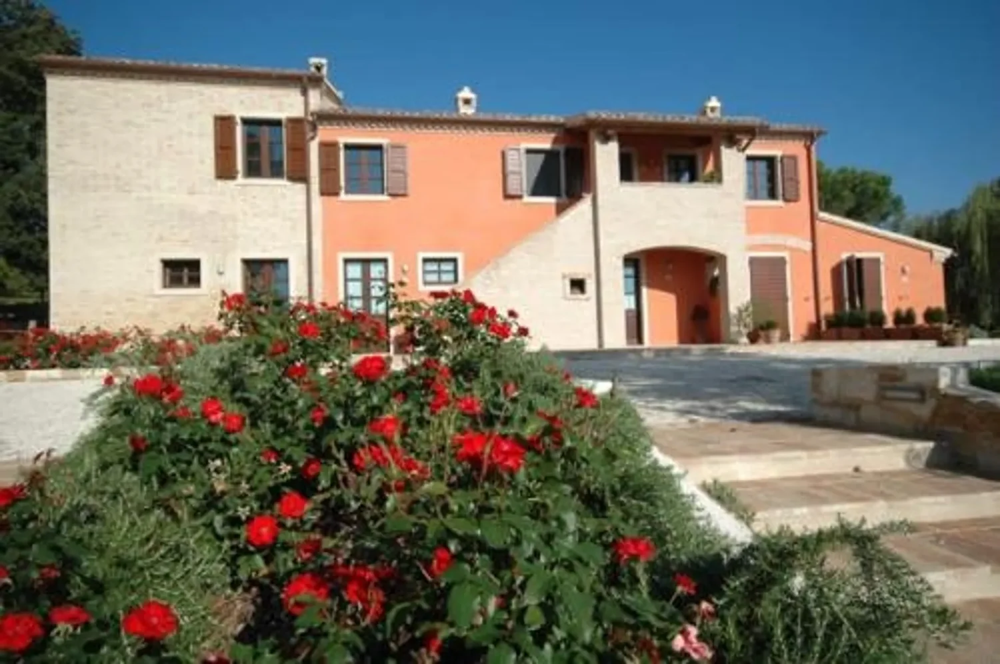

Manutenzioni edili
Interventi ordinari e straordinari sulle abitazioni e sugli edifici esistenti, definiti in base alle condizioni dell’immobile.
Manutenzioni e consolidamentiServizi edili · Provincia di Ancona
Ristrutturazioni, restauri e nuove costruzioni. Seguiamo anche manutenzioni, consolidamenti, coperture e ampliamenti in provincia di Ancona.

Le specializzazioni
Esplora i servizi e i progetti collegati per individuare il percorso più vicino al tuo intervento.
Altri interventi
Interventi ordinari e straordinari sulle abitazioni e sugli edifici esistenti, definiti in base alle condizioni dell’immobile.
Manutenzioni e consolidamentiConsolidamento e adeguamento sismico nell’ambito degli interventi di recupero, con le verifiche dei professionisti coinvolti.
Interventi sulle struttureRealizzazione e rifacimento di coperture in legno, ampliamenti e opere esterne per ville e case di campagna.
Coperture e ampliamentiLa nostra sede è a Sirolo. Nel portfolio trovi una villa con piscina a Sirolo, una palazzina in pietra a Numana e il recupero di grotte in un palazzo a Osimo. Lavoriamo nel Conero e in provincia di Ancona.
Per il complesso residenziale di Castelfidardo puoi consultare la pagina degli immobili e richiedere la disponibilità aggiornata.
Il metodo
Vediamo l’immobile o il lotto e raccogliamo le esigenze prima di definire le lavorazioni.
Con il cliente e i tecnici coinvolti definiamo l’intervento, i materiali e le fasi di lavoro.
Coordiniamo le lavorazioni e seguiamo il progetto fino alla consegna delle opere concordate.
Parliamo del tuo progetto
Raccontaci dove si trova l’immobile e che tipo di lavoro hai in mente.